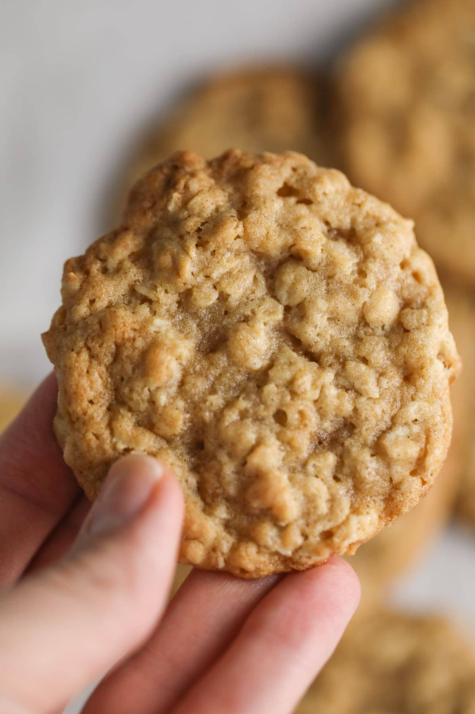

Oatmeal Cookie

Description
hi this is basically a blog post creation of Oatmeal cookies. It's easily the best type of cookie out there
especially when you add maple syrup to it. It's sooooo good. Yummy. Oatmeal also has oatmeal so that's awesome
Basically you need an oven + flour + oats + sugar and yay
Ingredients
3/4 cup packed light brown sugar
1 teaspoon vanilla extract
1 1/4 cups all-purpose flour
Steps to Make Oatmeal Cookies
Heat oven, prepare baking sheet: Preheat oven to 350 degrees. Line rimmed 18 by 13-inch baking sheets with parchment paper or silicone baking mats.
2. Whisk dry ingredients: In a mixing bowl whisk together flour, cinnamon, baking soda, baking powder and salt, set aside.
3. Cream butter and sugars using electric mixer: In the bowl of an electric stand mixer fitted with the paddle attachment cream together butter, brown sugar, and granulated sugar until combined.
4. Blend in eggs one at a time and vanilla: Add in one egg mix. Add in second egg and vanilla and mix.
5. Mix in dry ingredients: Add flour mixture to butter sugar mixture and mix just until combined.
6. Add mix ins: Mix in oats, raisins and walnuts, mixing just until evenly distributed.
7. Shape oatmeal cookie dough into individual rounds: Scoop dough out and shape into 1 1/2-inch balls (or 40 grams each), transfer to prepared baking sheet fitting 12 per sheet and spacing 2-inches apart.
8. Bake: Bake in preheated oven until golden brown on edges and nearly set (center should look under-baked), about 12 – 14 minutes.
9. Cool: Let cool on baking sheet for a few minutes then transfer to a wire rack to cool completely. Repeat with remaining dough.